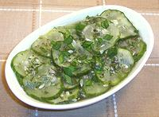

|
Cucumber Herb SaladEuro/American | ||||
| Serves: Effort: Sched: DoAhead: |
4 salad * 4+ hrs min Must |
A simple, refreshing, palate cleansing cucumber salad particularly useful as a a foil to heavier food. It can be made way ahead - and with no oil it's low in calories. | |||
|
|
1 1/2 1 2 2 2 3/4 2 ---- |
# T cl oz T T c T --- |
Cucumbers (1) Salt Garlic Shallot Mint fresh Dill fresh Rice Vinegar Honey --- Garnish Chives snipped |
Make - (4-1/2+ hrs - 20 min work)
|